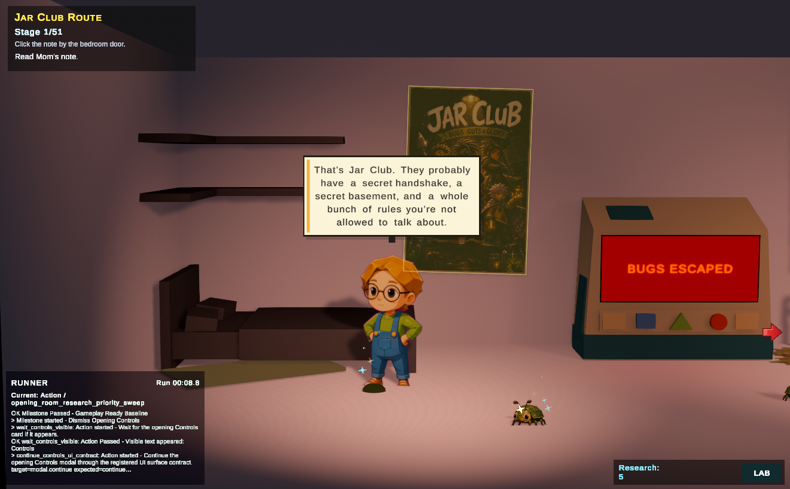
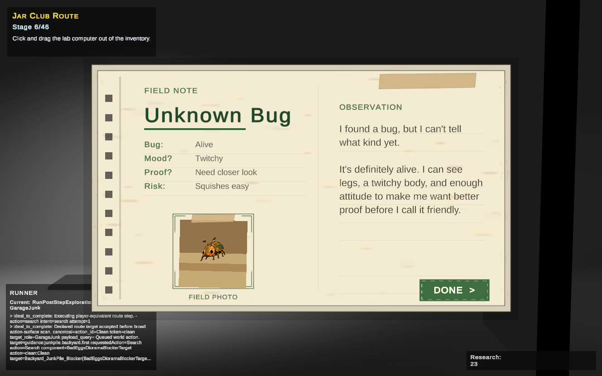
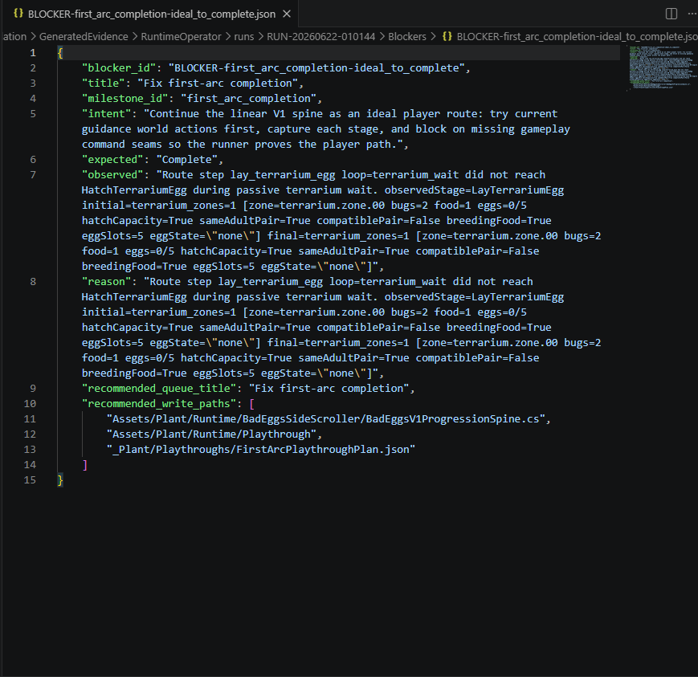
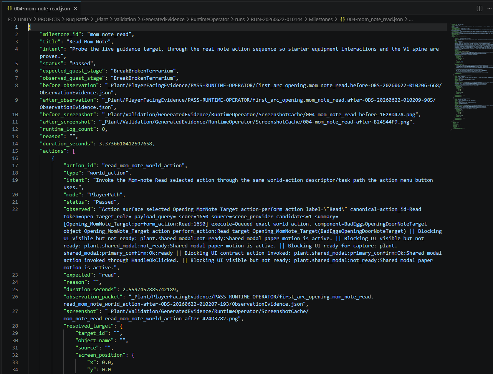
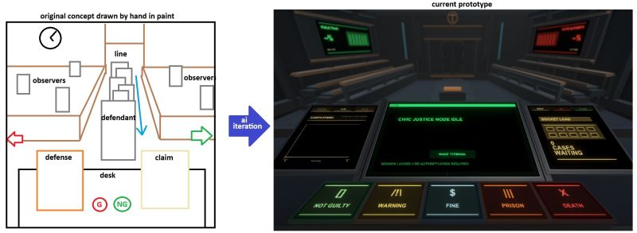
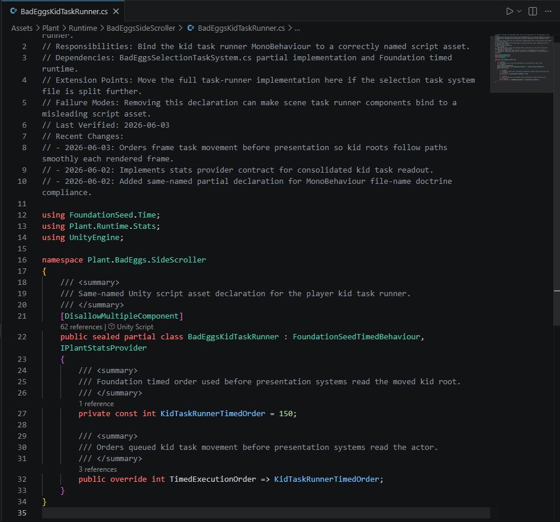
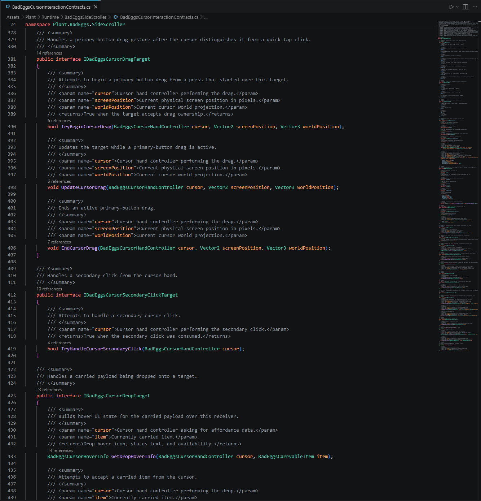
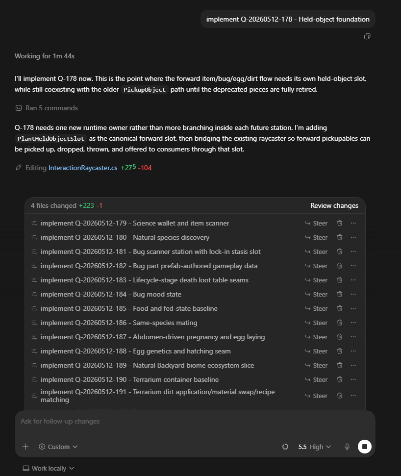
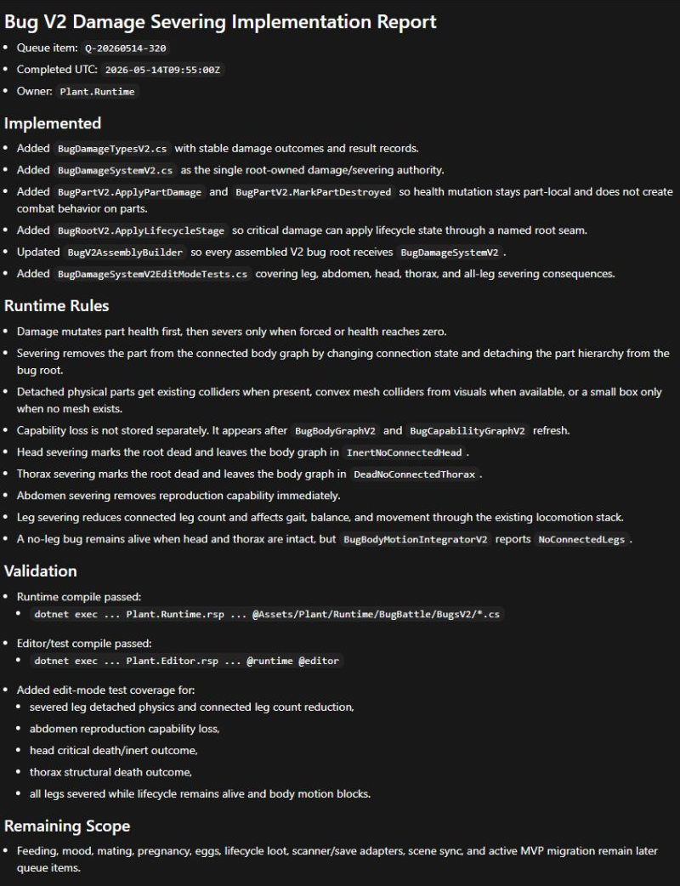

Less AI code rot
Changes are bounded by ownership maps, validation rules, and evidence instead of free-form chat output.
Changes are bounded by ownership maps, validation rules, and evidence instead of free-form chat output.
Each pass leaves intent, changed scope, observed state, blockers, screenshots, logs, and likely next files.
Agents can move through known systems quickly because the project tells them where work belongs and how to check it.
The workflow keeps AI assistance deliberate: small tasks, visible state, human review, and repeatable validation.
Workspace reality
The project is split into a reusable Foundation layer and a project-specific Plant layer. Foundation holds portable rules, system-map expectations, queue doctrine, validation structure, schemas, and templates. Plant holds the actual game work: runtime systems, editor tools, design doctrine, generated evidence, active queues, sync commands, and implementation history.
Codex works because it enters that structure instead of inventing structure from the prompt. It reads the current queue item, loads the relevant doctrine and maps, changes the owned files, runs or records validation, writes evidence, updates memory when project truth changed, and stops.
Operating layers
The important part is not one clever prompt. The project has to give the agent a place to stand: doctrine, ownership, queue state, validation rules, and evidence.
Each layer reduces drift. The agent can make a smaller change, prove what happened, and leave the next pass with enough context to continue without guessing.
Agents enter through a fixed read order: core doctrine, observability, package boundaries, queue rules, definition of done, failure recovery, patch safety, and project-specific Plant rules.
Runtime, editor, input, save, console, observability, validation, sync, prompt memory, impact mapping, generated artifacts, and promotion systems are discoverable before code changes start.
Prompt work is not freeform. Queue state records intent, planned paths, non-overlap judgments, acceptance criteria, evidence requirements, lifecycle state, failure reason, and completion proof.
Codex can inspect Unity-facing evidence through structured reports: scene hierarchy, selection context, asset samples, runner-operable UI, world action contracts, generated content audits, and command archives.
An in-engine runner performs player-like actions, records intent versus outcome, captures screenshots, writes action traces and blocker records, and feeds the next Codex pass with concrete runtime facts.
When a Plant rule becomes reusable, it is triaged as a promotion candidate. When it belongs only to the current game, it stays project-specific so the reusable seed stays clean.
Workflow examples

The runner follows a route through the live scene, asks the game for available world and UI actions, invokes the same command seams the player uses, and records what actually happened.

The runner does not blindly click labels. Blocking UI surfaces expose visible text, safe close or continue actions, and screenshots. Gameplay-changing actions require explicit route steps. Missing command coverage becomes evidence to fix the owner instead of adding another runner hack.

When the runner cannot complete a route, it records the expected state, observed state, failure reason, and likely files for the next fix pass.

Milestone records preserve the action path, observed quest stage, before/after evidence, and screenshot references instead of relying on memory.
Prototype assembly

Hand-drawn layout, generated scene structure, terminal UI, case data, verdict controls, and runtime flow were pushed into a working prototype instead of stopping at a mockup.

A rapid prototype where the level, rooms, objectives, lootable objects, carry interactions, and 3D node-based navigation are built as connected systems instead of isolated demo pieces. The navigation graph is set up from the generated level structure, so agents can move through the dungeon without hand-placing every path.

AI-assisted setup helped build a dynamic arena where generic units become different combat types from data: size, speed, movement style, team role, and abilities are passed in as a recipe before the controller performs.

The workflow does not treat generated code as disposable output. Governed scripts carry ownership notes, responsibilities, dependencies, failure modes, last verification dates, recent changes, and inline summaries so the next pass can understand why the file exists and what changed.

The generated work is not left as anonymous code. Everything is documented with summaries, parameters, return values, and reference context, so the next human or AI pass can understand what each interaction surface is responsible for before changing it.

The project records the queue item before execution, so Codex works inside a known scope instead of wandering through a chat request. The surrounding queue also shows how deep the system plan is: held objects, scanning, discovery, lifecycle, mating, genetics, containers, and material swaps.

The report explains what changed, which runtime rules now exist, what validation passed, and what still needs work. That makes the next pass easier to review and easier to continue.
Primary artifact